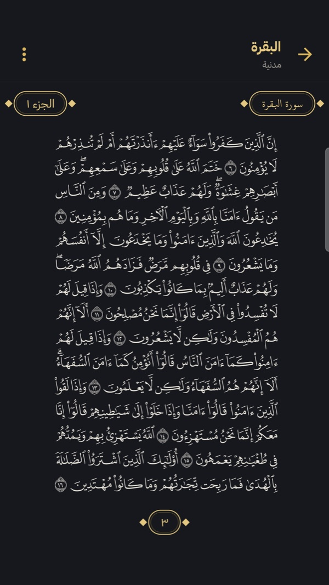
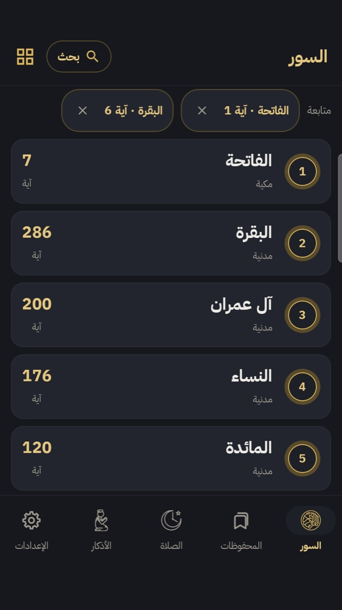
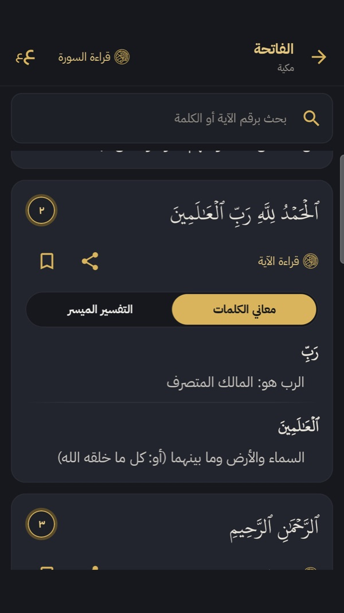
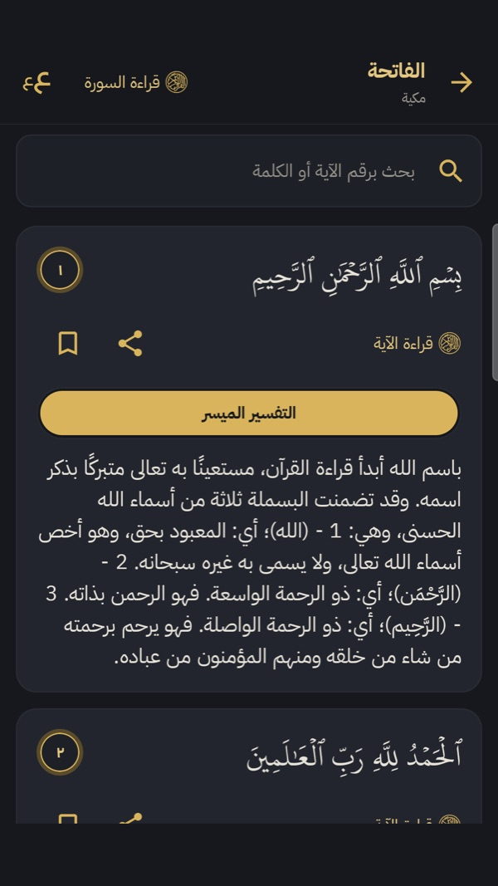
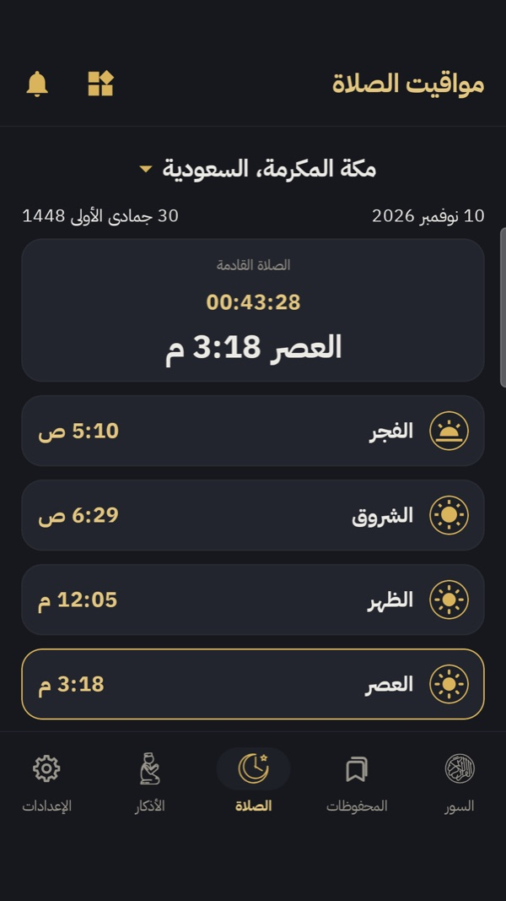
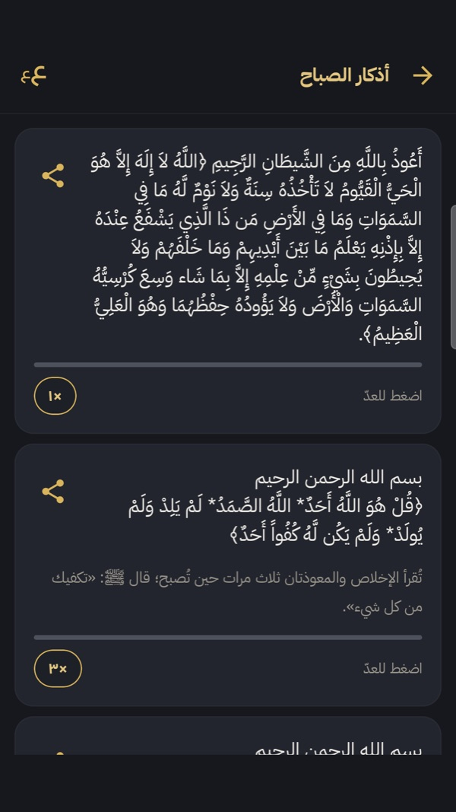
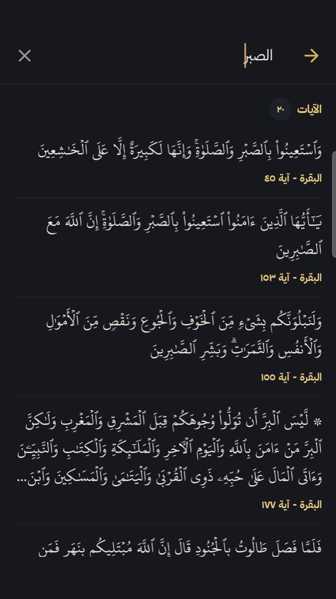
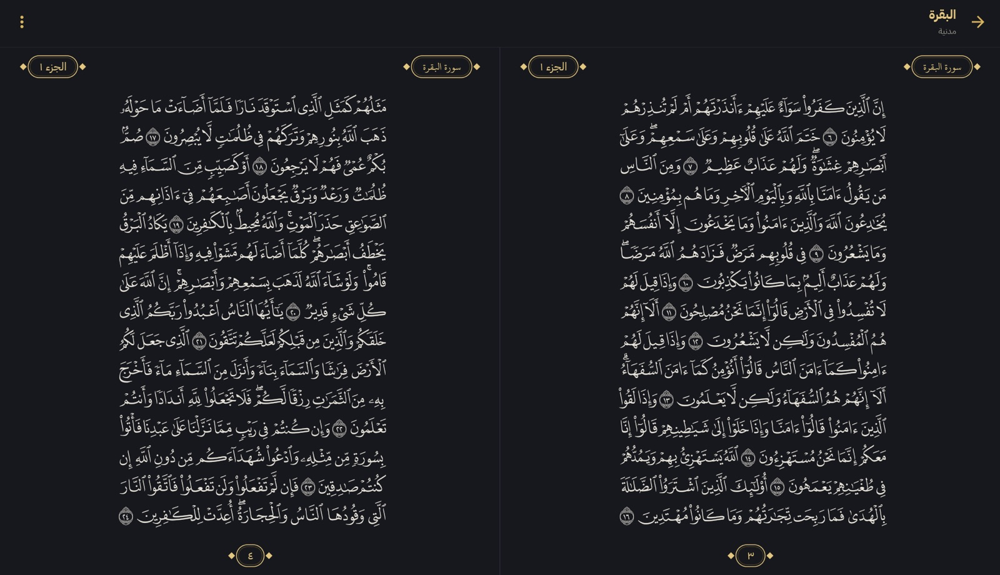
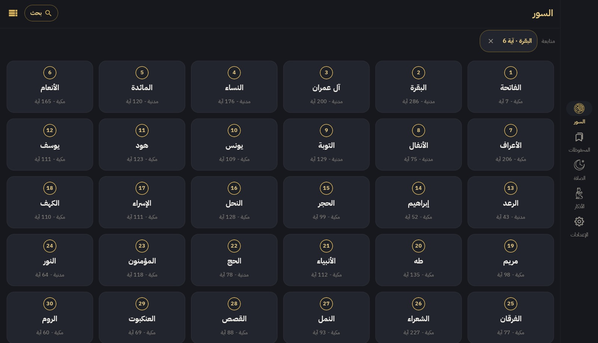

اقرأ القرآن وافهم كل كلمة
قراءة بالرسم العثماني، معاني الكلمات آيةً آية، التفسير الميسّر، مواقيت الصلاة، والأذكار — في تطبيق واحد.
متكيّف بالكامل مع كل شاشة: الهاتف والجهاز اللوحي والأجهزة القابلة للطي، عمودياً وأفقياً.
﴿الرَّحْمَٰنُ عَلَّمَ الْقُرْآنَ خَلَقَ الْإِنسَانَ عَلَّمَهُ الْبَيَانَ﴾

كل ما تحتاجه لفهم كتاب الله
ستّ مزايا رئيسية صُمّمت لتجعل القراءة والفهم أسهل وأجمل.
قراءة السور
نص القرآن كاملاً بالرسم العثماني وخط حفص، مع خاصية «متابعة القراءة» من حيث توقفت وتكبير الخط.
معاني الكلمات والتفسير
معنى كل كلمة، روجعت بواسطة مدقّق متخصص في القرآن واللغة العربية، مع «التفسير الميسر» من مجمع الملك فهد لطباعة المصحف الشريف لكل مجموعة آيات.
بحث شامل
ابحث في القرآن كله عن أي آية أو كلمة، مع إبراز نتائج البحث داخل النص.
المحفوظات
احفظ الآيات التي تريد الرجوع إليها، ونظّمها وعُد إليها بضغطة واحدة.
مواقيت الصلاة والقبلة
مواقيت دقيقة حسب موقعك مع بطاقة «الصلاة القادمة» واتجاه القبلة. يُرسل موقعك التقريبي فقط لجلب مواقيت الصلاة.
الأذكار
أذكار الصباح والمساء والصلاة والسفر والحج، مصنّفة وقابلة للمشاركة كنص أو صورة.
من داخل التطبيق
واجهة داكنة مريحة بلمسات ذهبية، ومظهر فاتح لمن يفضّله.

قائمة السور

معاني الكلمات

التفسير الميسّر

مواقيت الصلاة

الأذكار

البحث في القرآن
مصمَّم لكل شاشة
التطبيق متكيّف بالكامل: على الهاتف والجهاز اللوحي (أندرويد و iPad) والأجهزة القابلة للطي، عمودياً وأفقياً، يعيد ترتيب نفسه ليستفيد من كل مساحة.


شريط تنقّل جانبي
على الشاشات العريضة تنتقل أزرار التنقّل من أسفل الشاشة إلى شريط جانبي، لتبقى المساحة كلها للقراءة.
صفحتان متقابلتان
في الوضع الأفقي على الجهاز اللوحي تظهر صفحتا المصحف متجاورتين كما في المصحف المطبوع.
شبكة تتّسع مع الشاشة
تزداد أعمدة قائمة السور مع اتساع الشاشة: ثلاثة على الهاتف وستة على الجهاز اللوحي.
عرض مريح في كل اتجاه
يبقى النص والبطاقات بعرض مريح للعين على الشاشات الكبيرة، عمودياً وأفقياً، ومع أي حجم خط تختاره.
عن التطبيق
تطبيق مجاني بلا إعلانات ولا تتبّع، هدفه تيسير فهم القرآن الكريم.
المصادر:
- نص القرآن — مجمع الملك فهد لطباعة المصحف الشريف — رواية حفص، الرسم العثماني
- خط القرآن — KFGQPC HAFS Uthmanic Script
- تخطيط صفحات المصحف وخطوطها — مصحف المدينة (KFGQPC QCF V4) عبر منصة QUL من Tarteel
- التفسير — التفسير الميسر — مجمع الملك فهد لطباعة المصحف الشريف
- الترجمة الإنجليزية — مركز رواد الترجمة عبر الموسوعة القرآنية quranenc.com
- معاني الكلمات — روجعت بواسطة مدقّق متخصص في القرآن واللغة العربية
- الأذكار — حصن المسلم (hisnmuslim.com)
- مواقيت الصلاة — واجهة AlAdhan — يُرسل موقعك التقريبي فقط لجلب مواقيت الصلاة
- صوت الأذان — “Call to prayer by Sabah Fakhry” — بصوت المؤذن صباح فخري، ويكيميديا كومنز (ملكية عامة)